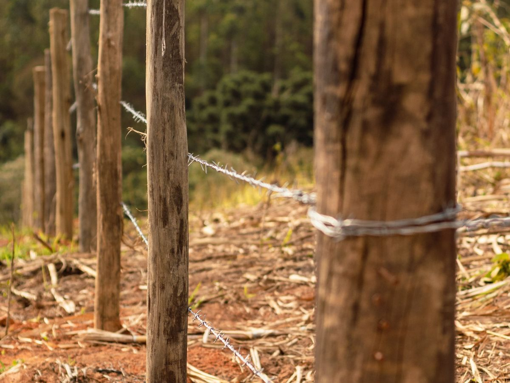
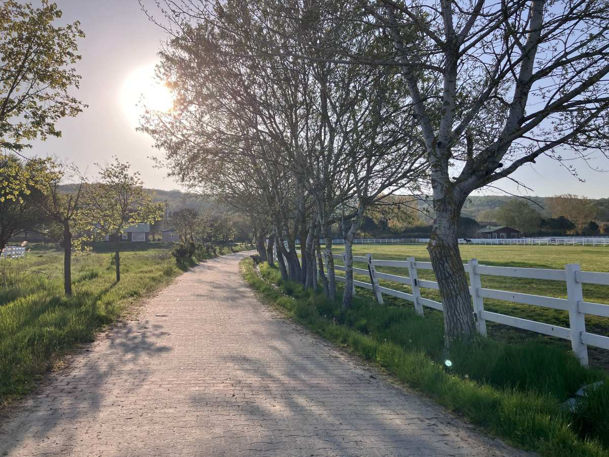
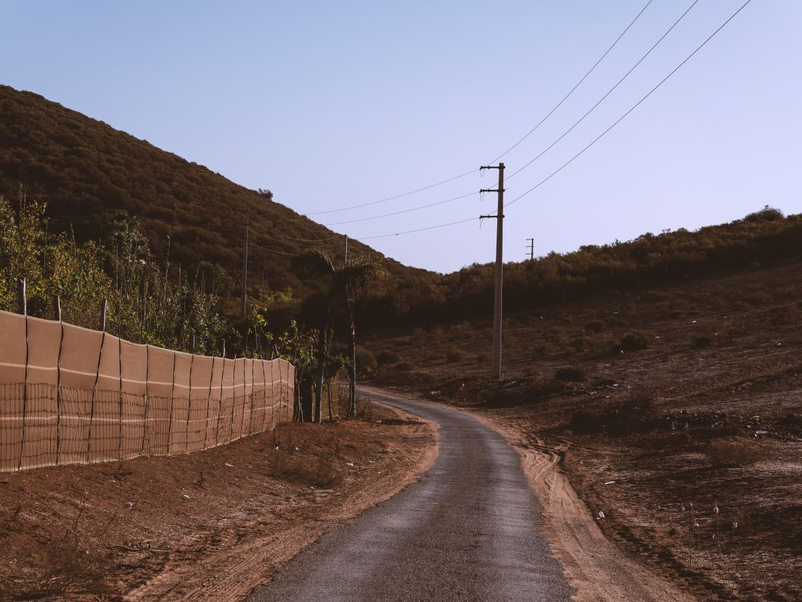
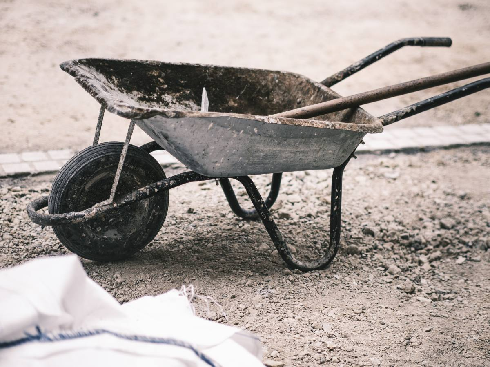
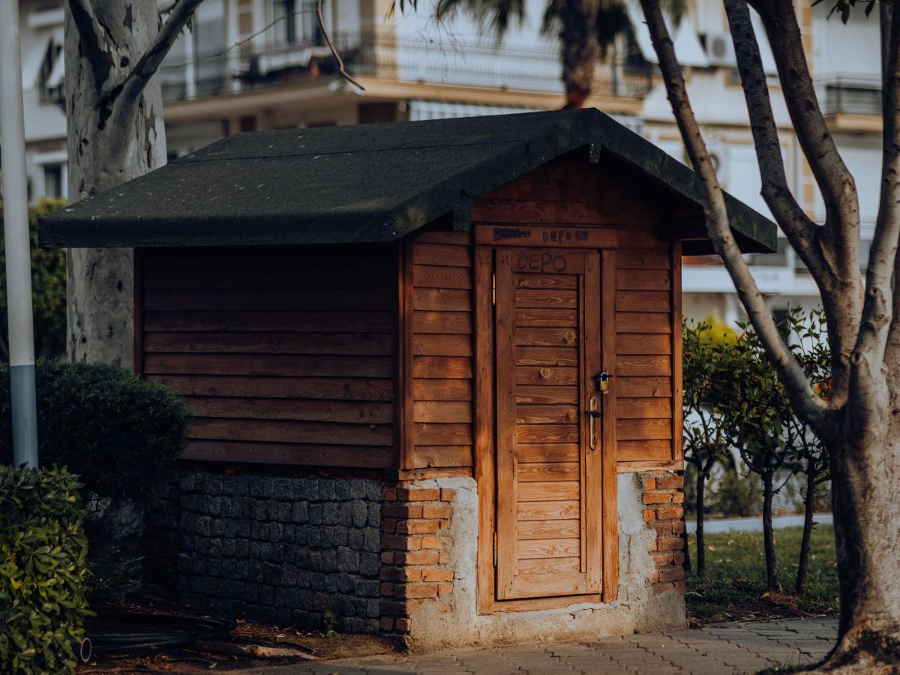
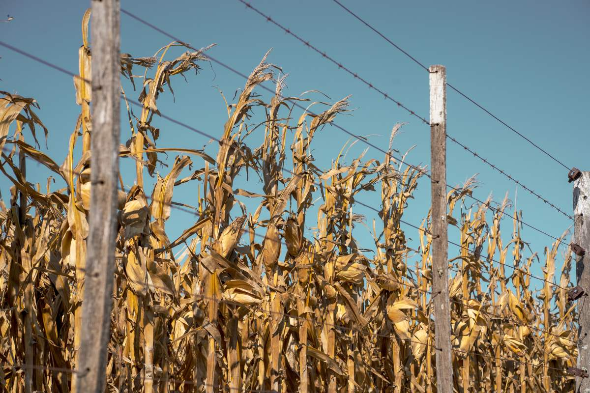
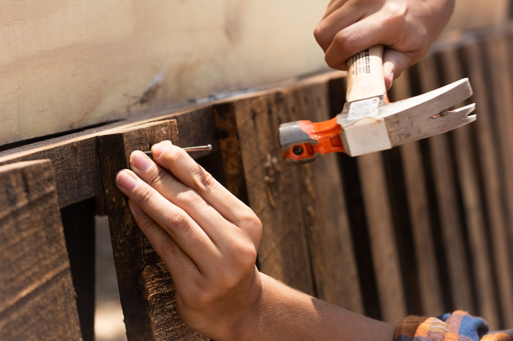

Villarrica · Ruta 199, sector El Tume
Ferretería de camino, abierta desde las 8:30.
De lunes a sábado, en la Ruta 199.
- 139reseñas en Google
- 4,3de nota promedio
- 11horas abierta de lunes a viernes
- 0páginas propias en su ficha
Antes de salir a la ruta
¿Cómo cargo la camioneta?
Se compra en la berma: se carga bien antes de volver.
- LO PESADO
Adelante y abajo
Contra la cabina, no en la puerta.
- AMARRAS
Cruzadas
Bien tensas, de lado a lado.
- LO QUE ASOMA
Bandera roja
En la punta que sobresale atrás.
- A UN KILÓMETRO
Revise de nuevo
Las amarras se sueltan con el camino.
No reemplaza la norma de tránsito.
En la ruta, sin entrar al centro.
En la Ruta 199
El local, por horario
-

Lo que la distingue
En el camino
Sector El Tume, Villarrica.
-

Temprano
Desde las 8:30
De lunes a sábado.
-

De corrido
Hasta las 19:30
De lunes a viernes.
-

El sábado
Hasta las 17
La tarde del sábado también.
-

Domingo
Cerrado
Vuelva el lunes.
-
Antes de ir
Por teléfono
(45) 288 8478.
Horario de su ficha en guías en línea.
139 reseñas y un 4,3.
Ruta 199, El Tume
Polín, alambre y carretilla
Un día en el local


Fotos de referencia: ninguna es del local.
Dónde estamos
Ruta 199, sector El Tume
- Dirección
- Ruta 199, El Tume, Villarrica
- Teléfono
- (45) 288 8478
- Lunes a viernes
- 8:30–19:30
- Sábado
- 8:30–17
El domingo está cerrado: llame antes si viene de lejos.
Ruta 199, El Tume Abrir en Google Maps
Para el dueño
Qué es real y qué falta
Lo verificado
La ubicación en la ruta, el teléfono, el horario y las 139 reseñas.
Lo de ejemplo
La guía de carga y las fotos.
Lo que falta
Qué materiales tienen, si despachan y un celular con WhatsApp.